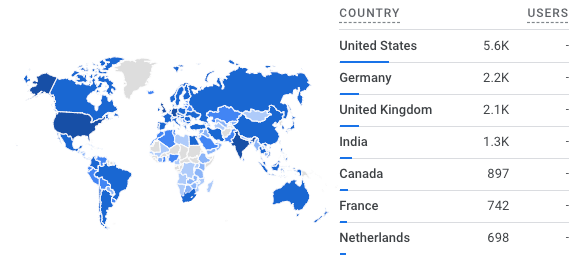

Dan's Robot Labs¶
Here is a high-level summary of Dan McCreary's robot labs. The labs are spread over about 20 websites that each focus on a different topics of STEM, coding, data literacy and AI.
1. Robot Day¶
This website supports a single-day event at a school. It puts a focus on low-cost hands-on labs to engage students in all the steps to build a $19 collision-avoidance robot.
The site puts a focus on helping a school execute the event including ideas for logistics and promotion of a successful event as well as the event tables and labs.
2. Beginning Python¶
This website contains lessons for students who are just begging to learn to program with Python. Python has been our most popular language. We are always looking for Python Mentors who can volunteer to work with girls and disadvantaged youth in these programs. Most of the lessons run on the kid-save Trinket.com website. We are most proud of our Journey Map which helps students get oriented on their Python journey.

Note that when we start, students are shown this map. If they reach the end (not the finish flag) they they get a cool Python sticker.
3. MicroPython for Kids¶
This website contains a huge number of lessons for students to learn physical computing with Python. We put a focus on the Raspberry Pi Pico and we converted most of our 200+ legacy Arduino labs written in C to use MicroPython.
This site has hundreds of sample lesson plans and projects as well as extensive documentation
on various kits such as a $19 collision avoidance robot using the RP2040 processor.
Please let me know if you can help contribute sample programs.
As of March of 2023, this site became our most popular site with over five thousand page views each month from students, teachers and mentors around the world! Every month we are getting more and more page views and we continue to add new content.

This map shows the number of page views by country in 2023.
4. MicroSims¶
This website contains our current examples of how we use generative AI to create highly customizable simulations for each classroom. Most of our examples generate p5.js JavaScript programs that can be customized with prompts. We have extraordinary success teaching teachers to use generative AI to create these simulations but also generate detailed lesson plans that are grade-specific using this approach.
5. Moving Rainbow¶
How much computational thinking can we teach using a $4 microcontroller and a $3 LED strip? It turns out the answer is "a lot!". This website has many examples of learning how to program Python using really fun bright LED strips. We can use them as the basis for LED costumes, wall decorations, night lights, clocks, signs and many more projects.
Although some of the content is a duplicate of the NeoPixel labs on the MicroPython site, we have placed all the relevant examples and added new detailed content for a class where every participant has these kits. This $7 kit and this website has also been used for our Halloween costume IoT Hackday and other special events. This also means we have many mentors who are already familiar with these kits.

6. Robot Faces¶
With the advent of low-cost and bright OLED displays, our students have wanted to add "faces" to our robots that show expressions like happiness, surprise, sleepiness, etc. These labs use the new MicroPython ellipse and poly functions introduced in 2023 to make drawing even complex shapes like eyebrows possible.

7. Generative AI For Teachers¶
Generative AI For Teachers Website
This website was originally started to help teachers use Generative AI to help automate time-consuming tasks such as generating customized lesson plans for students. It has grown to include a rich library of simulations for helping instructors demonstrate concepts. The site also includes a link to the video of our presentation.

8. Clocks and Watches with MicroPython¶
MicroPython Clocks and Watches Website
This is our latest project that takes advantage of the new color Smart Watch displays. Although the displays cost only around $7 each, they offer bright colors on a 240-240 circular display. You can program your own digital and analog watch faces as well as build clocks that synchronize with the time servers for accurate time. They can even be used to display the current temperature, weather forecast and phases of the moon.
9. STEM Robots¶
10, AI Racing League¶
This site provides resources for an AI Racing League event. It uses $300 cars powered by a Raspberry Pi with a video camera on a RC car chassis. Student drive around the track 20 times and gather 20 thousand images of the lines on the track. These images are set to a GPU server that trains an machine learning model to use the steering and throttle. The model is then transferred back to the car to drive autonomously.
These events require senior mentors that are familiar with the Donkey Car, Python and machine learning. The events work best with juniors and seniors in high school.
11. Beginning Electronics¶
This site features generative AI resources for instructors that are teaching basic electronics at the junior high or high school level. We assume each student will have access to around $20 of parts including basic electronics components and a breadboard. We also have MicroSimulations for schools that don't have the funding for these kits.
12. Learning Graphs¶
This website contains resources teaching the concepts around Learning Graphs. Learning graphs are concept graphs that are used by AI agents to generate high quality lesson plans customized to the needs of students. This course includes an extensive tutorial on how to use the vis.js JavaScript framework to create learning graph visualization and editing tools.
13, Graph Learning Management Systems¶
Graph Learning Management Systems
14. Systems Thinking¶
This course was originally designed for technologist that were getting involved in analysis of complex IT ecosystems. We have extended it with examples so that the resources can also be used for teaching Systems THinking at the high-school level using interactive simulations.
15. AI Assisted Geometry¶
This website contains resources to help teach a high-school level course on geometry. We have created an extensive learning graph with the key concepts for a geometry course as well as many MicroSims that allow students to interactively explored these concepts. We focus on helping teachers us generative AI to build and modify these MicroSims using well designed 2D and 3D geometry templates.
16. Signal Processing¶
This website is designed to help both instructors and students who are interested in learning about signal processing. This website uses generative AI and encourages both instructors and students to use generative AI to create and modify content such as simulations and animations of signal processing concepts.
Building Intelligent Textbooks with Mkdocs¶
Mkdocs is an open source build framework wildly used to create documentation and lessons for instruction. This is a guide for instructors building textbooks that are intelligent and can be quickly customized by AI agents.